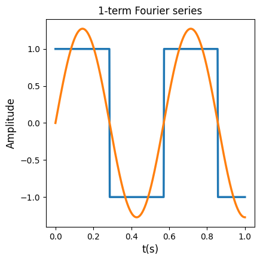
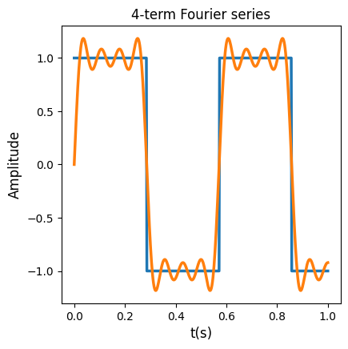

Lecture 9: Early Quantum Algorithms I#
Warning
These lecture notes are a work in progress and are not a replacement for watching the lecture video, it’s intended to be a supplementary reading after watching the lecture.
Learning Outcomes
In this learning we will get familiarised with quantum algorithms in general. We will learn what is a quantum algorithm and why do we need quantum computers. After that we will talk about three important quantum algorithms that were created on the beginnings of QC. These algorihtms are:
Deutsch Algorithm.
Quantum Fourier Transform.
Quantum Phase Estimation.
Why do we need quantum computers?#
Let’s start with a quick recap of why we need quantum computers:
Quantum computers can be far powerful than their classical counterparts. Qubits are informationally dense, meaning that we can encode 1 GB of information in just 33 qubits. A quantum computer with 272 qubits can represent more states than atoms are in the universe!
Apart from their computational advantage, quantum computers change the way we think about problems.
Probabilistic nature: The probabilistic nature of quantum mechanics allows us to think in terms of distributions instead of single outcomes. Measuremente in quantum computers is therefore intrinsically probabilistic, enabling a different approach to some problems.
Interference and entanglement as tools: Interference and entanglement can be used to create correlations between qubits that classical bits can capture. We will see this in detail later in the lecture.
Using physics as computation: Quantum mechanics laws can be used for making computations. As they rely in the principles of quantum mechanics, quantum computers can directly model some quantum systems. This is reflected in this quote of the fantastic Richard Feynman:

Fig. 11 Richard Feynman quote about quantum simulation.#
The examples we have just presented assume noise-free qubits.
In practice qubits have errors, which means that more qubits are needed in order to make computations.
What is an algorithm?#
Algorithm
An algorithm is a set of instructions, functions, or a recipes that takes in some input and produces an output in order to solve some sort of problem.
A classical algorithm is fundamentally based on binary operations, or the moving around of bits or 0s and 1s, and is run on classical hardware.

Fig. 12 Diagram of an algorithm.#
An everyday example is the google maps and route optimization algorithm. One can input the desired destination and method of transport, and the algorithm outputs the fastest route.

Fig. 13 Google maps screenshot.#
What is a quantum algorithm?#
Quantum Algorithm
A quantum algorithm is an algorithm formulated for a quantum computer, where quantum mechanics principles are used to process information.
Operating on quantum hardware allows the algorithm to take advantage of quantum mechanical properties such as superposition, entanglement or interference.
For gate-based models for quantum computation, the input of the algorithm is encoded in an array of qubits, which are acted upon by a quantum circuit.
Fig. 14 Quantum circuit.#
The result of applying a quantum algorithm is a probability distribution over the possible different outcomes, which are arrays of 0s and 1s representing the final state of each qubit.

Fig. 15 Probabilistic outcome of a quantum algorithm.#
Computational complexity.#
Time and memory space are the two fundamental variables we are concerned with when comparing classical and quantum algorithms.
These two metrics are encapsulated in the subject of computational complexity.

Fig. 16 Plot showing complexity for different functions.#
The image above represents an example of time/memory complexity with respect to some value N, that could be for example the number of variables of a given optimisation problem.
In the graph we can see how the different lines scale in a different way with the N value. We would say in this case that the algorithm represented by the blue line is the most efficient.
The O shown in the graph legend is known as big O notation. It represents the limit behaviour of a function. As an example, this would mean that in the graph the orange line would be at most a multiple of N.
Basic quantum algorithms.#
Three quantum algorithms will be covered in this lecture:
Deutsch algorithm: One of the first algorithms that showed the potential of QC.
Quantum Fourier transform (QFT): Key part in lots of important QC algorithms.
Quantum phase estimation (QPE): One of the first QC algorithms to show a wide range of applications.
These algorithms were all created during the early times of quantum computing.
In some cases, they are the basic building blocks of more complex and recent algorithms.
Studying these algorithms is fundamental to understanding the basics of quantum computing, and to continue progressing to more complex algorithms and topics.
Deutsch Algorithm.#
Deutsch Problem.#
The Deutsch Problem is defined as follows :
Let \(f: \{0,1\} \to \{0,1\}\) be a Boolean function that takes a single bit as input and outputs either 0 or 1. The goal is to determine whether \(f\) is:
Constant: \(f(0) = f(1)\)
Balanced: \(f(0) \neq f(1)\)
using as few evaluations (queries) of \(f\) as possible.
Classical approach:
We need to make two evaluations of the function \(f\) to determine if it is constant or balanced.
Quantum approach (Deutsch’s algorithm):
Using a quantum computer, we can determine if \(f\) is constant or balanced with just one evaluation.
Quantum Parallelism.#
Quantum parallelism
Is a fundamental feature of many quantum algorithms, that allows quantum computers to evaluate a function \(f(x)\) for many different values of x simultaneously.
Considering a function \(f : \{0, 1\} \to \{0, 1\}\) and a quantum computer starting in the state \(|x\rangle|y\rangle\). By using a quantum oracle, i.e., a black-box unitary operator \(U_f\), we can make the transformation: \(U_f\left(|x\rangle|y\rangle\right)=|x\rangle|y\oplus f(x)\rangle\). We will see how to build oracles \(U_f\) in the exercises for the lecture.

Fig. 17 Truth table of XOR gate#
When our qubits are in the following states:
then we can easily see that \(U_f(|x'\rangle|y'\rangle) = \frac{1}{\sqrt{2}}\left[|0\rangle|f(0)\rangle + |1\rangle|f(1)\rangle\right]\).
So, by implementing the oracle \(U_f\), we are evaluating both values \(f(0),f(1)\) simulatenously.
However, we can only access one of the amplitudes, and therefore one vaue, per measurement. So we will need to use other tools in order to solve our problem in just one measurement.
Deutsch Algorithm.#

Fig. 18 Circuit of the Deutsch algorithm.#
The image above shows the circuit for the Deutsch algorithm. Let’s break down it step by step:
The initial state is:
After that we apply superposition using Hadamard gates so that we arrive to the state:
If you remember the diagonal states from previous lectures, you can see that we can rewrite our state as:
Now we arrive to the part where the oracle acts to create parallelism between the function values. Remembering that the oracles acts over a state \(|x\rangle|y\rangle\) as:
then we can see that :
using diagonal states notation, this equation can be rewritten as:
using this identity, we can see that for our case:
which again can be rewritten as:
By applying the final Hadamard gate we generate interference between the states. By doing some algebra one can see that the state of the circuit is now:
From this we see that if we measure \(|0\rangle\) on the first qubit that means that the function is constant, while if we measure \(|1\rangle\) that means that the function is balanced, and thus the Deutsch problem is solved.
Deutsch-Jozsa algorithm.#
So far we have seen the case for 1-bit function. But what if the function is n-bit?
In 1992 David Deutsch, together with Richard Jozsa proposed an algorithm that solves this. It is very similar to Deutsch algorithm, just a little bit more complex. Once again the algorithm can tell if the function is constant or balanced in just one query.
In this case classically, determining if the function is constant or balanced can take up to \(2^{n-1} + 1\) queries.
Warning
While this looks like a big improvement, the Deutsch and Deutsch-Jozsa algorithms have no known practical applications.
However this algorithms are very important as they showed the power of QC in its early stages. Also, the way they use superposition, parallelism, and interference were a source of inspiration to other algorithms that have shown lots of potential applications, as we will see in the next sections.
Quantum Fourier Transform.#
Fourier analysis I.#
Was invented by Joseph Fourier n the early 19th century, while studying heat transfer.
Studies how complex functions can be approximated by sums of sines and cosines.

Fig. 19 Plot of the sine and cosine functions.#
The quantum Fourier transform has a wide variety of applications:
Signal processing.
Electronics.
Machine learning.
Time series analysis.
Quantum mechanics.
Fourier analysis II.#
Let’s provide a mathematical definition of what a Fourier series is:
Let \(f(x)\) be a complex periodic function. Its Fourier series will be given by:
\[f(x) \rightarrow \sum_{n=-\infty}^{n=\infty}c_ne^{i2\pi \frac{n}{P}x},\]
where \(P\) is the period of the function, and we assume that the the function \(f(x)\) is integrable in the interval \([0,P]\).
The coefficients \(c_n\) will be given by the formula:
\[c_n = \frac{1}{P}\int_{0}^{P}f(x)e^{-i2\pi \frac{n}{P}x}dx\]We can see that the function \(f\) is expanded as a trigonometric series. Each term has a frequency associated, and the coefficients \(c_n\) will determine the weight or contribution of each frequency to the signal.
Let’s see an example of how this works, for the square function \(s(x)\). This function is defined as:
\[s(x) = sgn(sin(2\pi f_0 x))\]
where \(sgn\) is the sign function, and \(f_0\) is a real number called fundamental frequency. The plot of the square function looks like this:

Fig. 20 Plot of the square wave.#
If we solve the integral for the coefficients we obtain that:
\[\begin{split} \left\{\begin{matrix}c_n= 0 \text{ for }k\text{ even.}\\c_n= -i\frac{2}{\pi k} \text{ for }k\text{ odd.} \end{matrix}\right . \end{split}\]
if we substitute this coefficients in the Fourier series formula, and arranging terms, we obtain that:
The more terms we add in the series, the better if will approximate the function \(s(x)\). In the plots below we can see the Fourier series when using 1,2,3 and 4 first terms of the Fourier series.
 |
|
|---|---|
|
 |


Discrete Fourier Transform and Quantum Fourier Transform.#
In the previous section we saw the Fourier series for a function defined over a continuous domain. The discrete Fourier transform (DFT) is the analogous of Fourier series, but for a a sequence of discrete values. It takes a discrete set of points \(\{x_n\}:=x_0,\dots,x_{N-1} \rightarrow \{X_n\}:=X_0,\dots,X_{N-1}\), where the values \(X_k\) are given by the formula:
Similar to the continuous case, the coefficients \(X_k\) tell us how much the frequency \(k\) is contributing to our function.
The Quantum Fourier transform (QFT) is defined as the transformation that takes an state \(|x\rangle=\sum_{i=0}^{N-1}x_i|i\rangle\rightarrow |y\rangle=\sum_{i=0}^{N-1} y_i|i\rangle\), where the values \(y_i\) are given by the formula:
The QFT has a direct correspondece with the DFT, but in this case the transformation acts on a quantum state. The different sign in the exponent is just a mathematical convention.
QFT: Circuit notation.#
Before introducing the circuit implementing the QFT, let’s make a few notes about circuit notation:
Binary representation of a n-qubit basis: Sometimes it its useful to represent our basis vectors \(|0\rangle,\dots, |2^{n-1}\rangle\) in binary notation:
\[ |j\rangle = |j_12^{n-1} + j_22^{n-2} + \dots + j_n 2^{0}\rangle = |j_1j_2\dots j_n\rangle \]Binary fractions : They are defined in a similar way as binary integers:
\[ 0.j_1j_2\dots j_n=\frac{j_1}{2} + \frac{j_2}{4} + \dots + \frac{j_n}{2^{n}} \]Hadamard gate in binary fraction notation :
\[ H|j_1\rangle = |0\rangle + e^{2\pi i0.j_1}|1\rangle \]
Prodcut representation of QFT.#
We saw in the previous section that the QFT operator performs the following transformation on the states of the basis \(|j\rangle\):
This transformation can be rewritten as:
this is called the product representation of QFT. \(n\) is the number of qubits. Let’s see its algebraic derivation:
QFT: Circuit.#
For building the circuit what we will call \(R_k\) gate, which is defined as:
as we see is just a \(P\) gate with a value of \(\theta=2\pi/2^{k}\).
A controlled version of the \(R_k\) gate can be build. Remembering how a controlled gate acts, let’s look at this circuit:

Fig. 21 Building block of QFT circuit#
It is easy to see that the state of this circuit is:
This will be the building block of QFT. In the picture below we can see the QFT circuit for \(n\) qubits:
Fig. 22 QFT circuit for n qubits#
Now the state of the circuit would be:
we can see that the state is almost equal to the product representation we saw in previous section. The last step would be to apply SWAP gates (that interchange the state of two qubits) so that we retrieve the QFT formula. This will be the circuit representation of QFT operator.
QFT: Remarks and conclusions.#

Fig. 23 Table showing the performance of the QFT#
The table above shows the performance of the QFt compared to FFT. Even if the improvement compared to classical case seems to be huge, there are two caveats we need to have into account:
There are no efficient way of preparing a state \(x\) in a quantum computer. Encoding a vector \(x\) in a quantum computer may be very difficult or even impossible in actual devices.
When we measure a state, we obtain probabilities, which are the square module of amplitudes. So we can’t directly access the amplitudes of QFT transformation by performing a measurement.
However, QFT is still a central part in lots of other important quantum algorithms like Shor’s or Quantum Phase Estimation.
Quantum Phase Estimation.#
QPE: Definition.#
The quantum phase estimation or QPE is a a quantum algorithm that tries to find the norm-1 eigenvalues of a unitary operator \(U\):
The QPE algorithm will output the value of the phase \(\phi\) of the eigenvalues.
The algorithm works based in two assumptions:
The state \(|u\rangle\) can be encoded in a quantum computer.
A controlled-\(U^{2^t}\) gate can be prepared.
QPE: Circuit.#
Similar to the QFT case, let’s start by defining the building blocks of the QPE algorithm. First we should notice that:
The building blocks of QPE will be given by the following circuit:

Fig. 24 Building block circuit of QPE#
The state of this circuit will be in this case:
We will use this building block in our QPE circuit. The first part of QPE circuit for \(t\) bits used to find the eigenvalue \(\phi\) will look like this:

Fig. 25 First part of t-qubit precision QPE circuit for \(U\) and \(|u\rangle\).#
We can now focus ourselves just in the state of the first register. Having into account previous sections, we find that the state of the register is given by:
which assuming that our eigenvalue \(\phi\) can be expressed as a binary fraction in the form \(|\phi_1\phi_2\dots\phi_t\rangle\) and applying some algebra, can be rewritten as:
As we saw on the previous chapter, this expression is the result of applying the QFT operator to the state \(|\phi_1\phi_2\dots\phi_t\rangle\).
This means that now we can apply the inverse QFT operator to obtain the state \(|\phi_1\phi_2\dots\phi_t\rangle\), which will give us the value of the phase \(\phi\). This means that the complete circuit of the QPE will look like this:

Fig. 26 Full QPE circuit.#
QPE: Remarks and conclusions.#
The QPE will always output the right answer if \(\phi\) can be expressed as a binary function. The more digits it has in the binary fraction notation, the more qubits we will need in the first register to obtain an exact solution.
If the \(\phi\) can’t either be exactly expressed as a binary fraction, or we use in the first register less qubits than digits needed to exacly express \(\phi\) in binary fraction, we would get the right answer with a probability of at least \(4/\pi\approx 0.40\)

Fig. 27 Result of QPE for \(P\) gate operator when \(\phi=1/6\)#
QPE has lots of applications:
Shor’s algorithm for factoring.
Quantum chemistry and material sciences.
Solving linear systems (HHL algorithm).
Quantum walk and search algorithms.